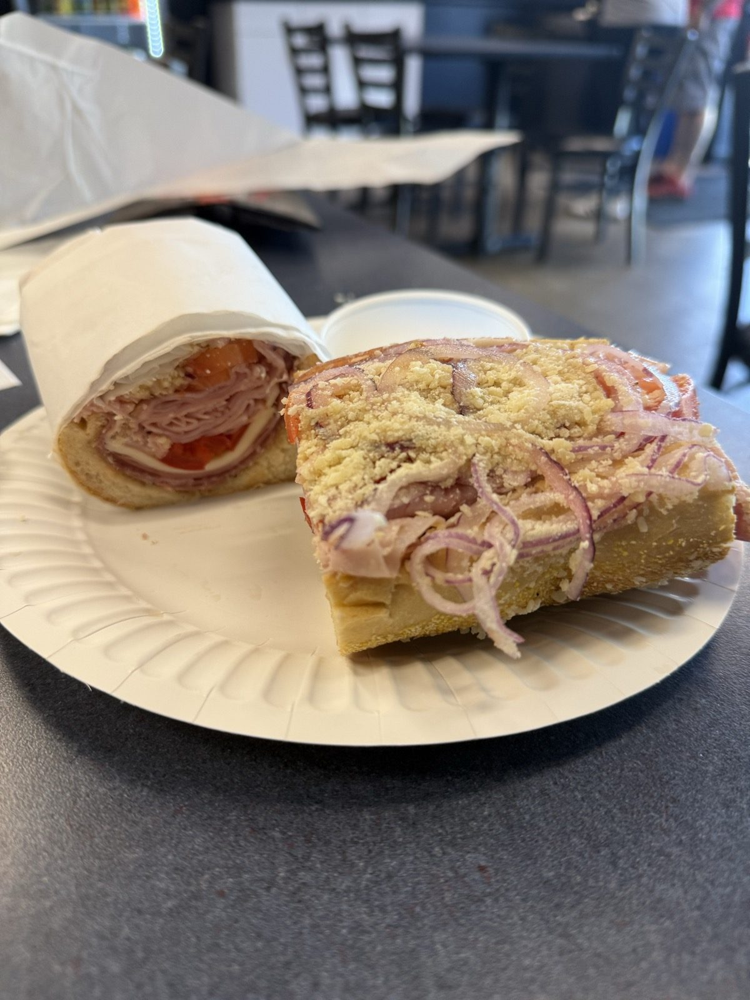
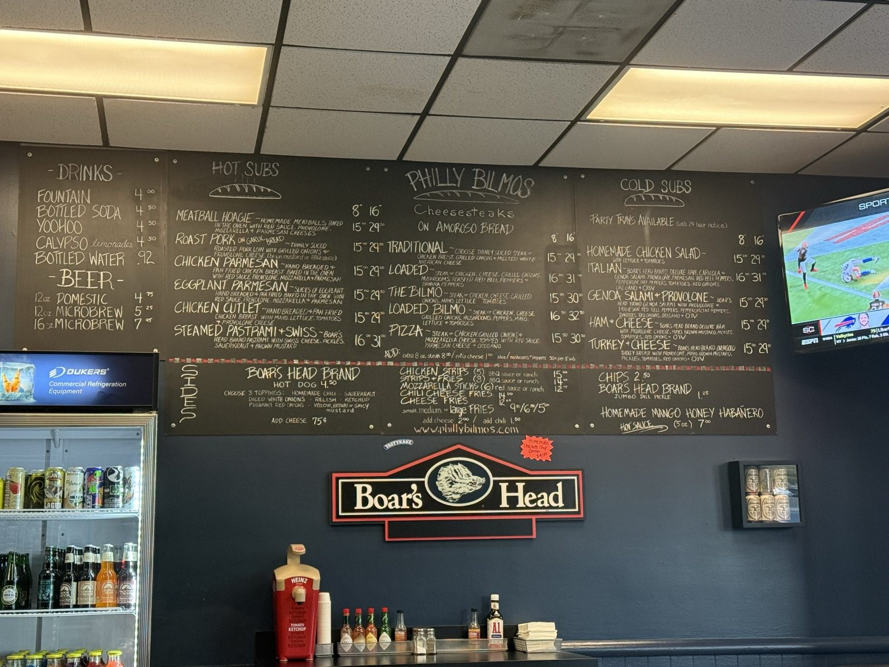
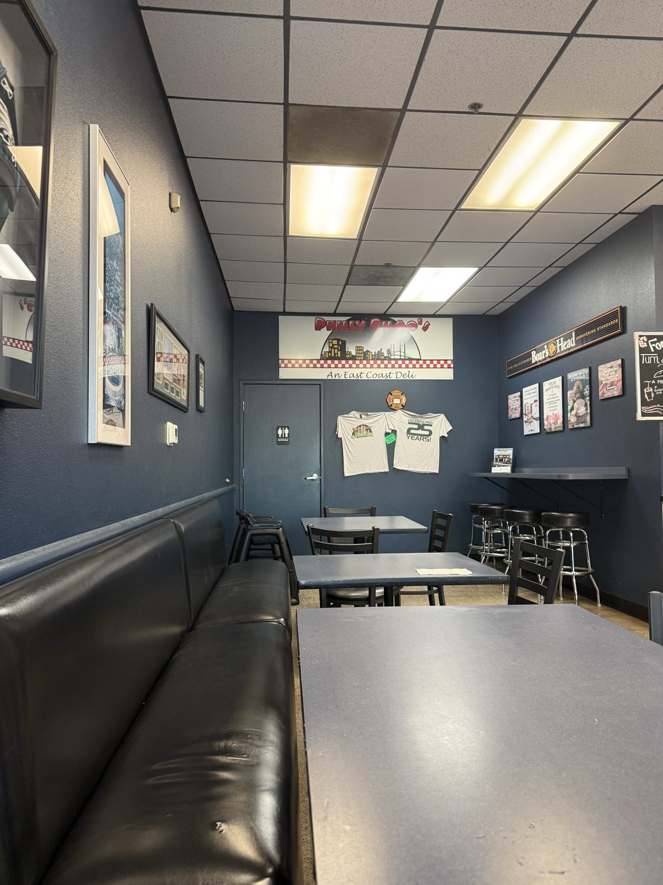
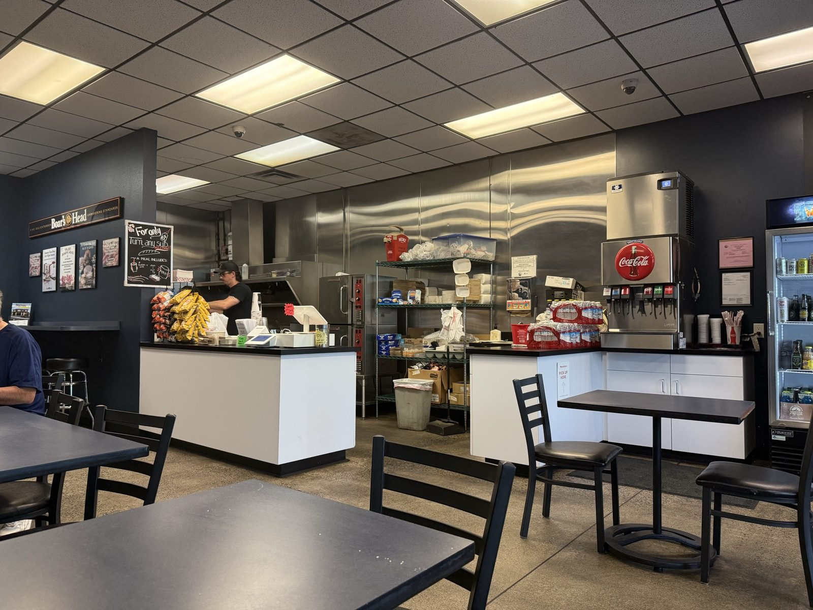

Tiger Sauce on the Italian, at Philly Bilmos

I went back to Philly Bilmos on SE 164th Ave in Vancouver, Washington tonight, and I ordered the same thing I ordered last time: the Italian sub. It's one of my favorite Italian subs anywhere in this area, and I'd already written it up once, ending with a promise that the cheesesteak was next. The cheesesteak is still next. The Italian won again.
Here it is, cut in half — one side still rolled up in the deli paper, the other laid open so you can see what's actually going on in there.
How I dress an Italian sub at Philly Bilmos
The build is Boar's Head deluxe ham, capicola and Genoa salami with provolone, parmesan, roasted red bell peppers, pepperoncini, tomato, red onion and oregano — $16 for the 8-inch, $31 for the 16-inch, on the same roll they put the cheesesteaks on.
The part I actually care about is what happens at the table. It doesn't arrive drowned in anything. The dressing and the grated parmesan come in little cups on the side, and there's a bottle of Tiger Sauce sitting out for anyone who wants it. So I do all three myself: Italian dressing over the top, then a real snowfall of parmesan — you can see how much of it in the photo, and that is not an accident — and then the Tiger Sauce. That combination is most of the reason I keep driving out here for a sandwich.
What is Tiger Sauce, and why is it so good on a sub?
Tiger Sauce is one of my favorite sauces, and I don't think many people around here have ever picked the bottle up. It's the Try Me brand one — squat bottle, green neck, roaring tiger on the label — and it isn't really a hot sauce in the way people mean when they say hot sauce.
It's built on a cayenne pepper base, but the two loudest ingredients are sugar and vinegar, with tamarind extract underneath doing the tangy part, plus garlic, oregano and cumin. Sweet and sour first; heat a distant third. PepperScale estimates the burn at around 500 Scoville units, which is roughly half a sriracha and less than a fresh poblano — mild enough that you can pour it on instead of dotting it on.
Sweet, sour, tangy, barely hot. That's the whole trick: you can use as much of it as you want.
Which is exactly why it belongs on an Italian. A sub like this is already salty and fatty — cured pork three ways, provolone, oil. What it wants is something sweet and acidic pushing back, not more fire. The Tiger Sauce brings sugar and vinegar, the Italian dressing brings more acid, and the parmesan brings salt and a little grit on top. It's especially good on the Italian here. I'd put it on nearly anything, but that's the sandwich it was made for.

Is the cheesesteak at Philly Bilmos authentic?
Here's the part I'll stand behind even on a night I ordered something else: Philly Bilmos makes the most authentic Philly cheesesteak in this region, and the best one. People drive across town for it. That isn't something you can say about many sandwiches in Clark County, and it's most of why the place gets five out of five from me.
The evidence is written on the board in chalk: Cheesesteaks on Amoroso Bread. Amoroso's is a Philadelphia bakery that has been going since 1904, hearth-baked with no pan, and it's the roll the cheesesteak was built on in the first place. Shipping that bread across the country is an expensive way to be right about something. The shop's own website doesn't hedge about it either — "it is all about the Amoroso bread." Traditional, Loaded, The Bilmo, Loaded Bilmo, or a pizza steak; $15 to $32.50 depending on size.


It's a strip-mall sandwich shop with a drop ceiling and paper plates, which is the correct amount of decoration for what it's doing. The last sub shop to turn up on this blog before I found this one was Firehouse Subs, and I said at the time that it wasn't really the same competition. Twenty-five years in, it still isn't.
The practical bit
Philly Bilmos Cheesesteaks — 2100 SE 164th Ave, Suite D105, Vancouver, Washington 98683. 📍 Get directions
Phone: (360) 944-1006.
Hours: Tuesday through Sunday, 11am–8pm. Closed Mondays.
Worth knowing: they also close for Easter, the Fourth of July, Thanksgiving, Christmas Day, and a full week in early August — worth checking before you make the drive in summer. Party trays with 24 hours' notice.
What to get: the cheesesteak if it's your first time — that's what the name is for. The Italian if you already know. Either way, dress it yourself, and use the Tiger Sauce.